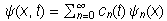
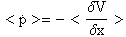

Èasovni razvoj valovne funkcije
MATEJ LEBAN, 30. marec 2000
Elektron je ob t = 0 v neskonèni potencialni jami širine 2a (med -a in a) z valovno funkcijo:
a) Izraèunaj valovno funkcijo elektrona ob poznejših èasih.
b) Kako se s èasom spreminja
verjetnost, da je elektron na desni polovici potencialne jame (x > 0) ?
c) Pokaži, da velja
Ehrenfestov teorem za povpreèno vrednost gibalne kolicine.
d) Izdelaj simulacijo èasovne odvisnosti
verjetnostne gostote.
Funkcijo najprej normiram:
Nastavek:

kjer so lastne funkcije za delec v neskonèni potencialni jami. Nastavek postavim v Schroedingerjevo enaèbo : in dobim
Za lastne funkcije dobim:
Dana funkcije je linerarna kombinacija lastnih funkcij:

Razvita po èasu pa zgleda takole:

Verjetnost je enaka:
Uvedem novo spremenljivko
Verjetnostna gotota:
ANIMACIJA: Verjetnostna gostota je simetrièna tako v x kakor v t. Verjetnost, da na delec naletimo v desni
polovici jame, niha okoli vrednosti 0.5.
Verjetnost, da je elektron v desni strani potencialne jame:
1)
2) 
Pokazati moram da za to valovno funkcijo velja Ehrenfestov teorem
1)
Ce <x> odvajam in množim z maso m, vidim da teorem velja.
2)